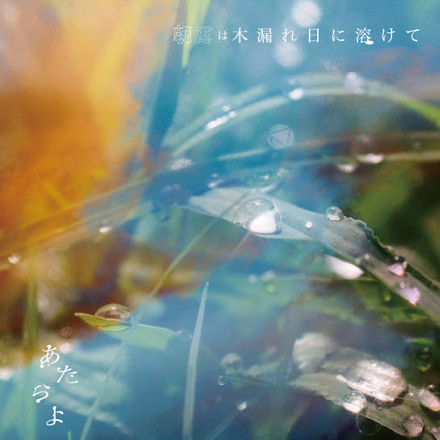

ATARAYO - realize

3rd - 朝露は木漏れ日に溶けて
아사츠유와 코모레비니 토케테
(아침 이슬은 나뭇잎 사이로 비치는 햇살에 녹아들고)
zまるで夢を見ているようだ
마루데 유메오 미테 이루 요-다
(마치 꿈을 꾸는 것 같아)
頬を撫でる緑風の中
호호오 나데루 료쿠후-노 나카
(뺨을 스치는 푸른 바람 속에서)
それはそれは美しく 儚い夢だった
소레와 소레와 우츠쿠시쿠 하카나이 유메 닷타
(그것은 참으로 아름답고 덧없는 꿈이었어)
このまま身を預けてしまえば
코노 마마 미오 아즈케테 시마에바
(이대로 몸을 맡겨 버리면)
楽になれる気がしたの
라쿠니 나레루 키가 시타노
(편해질 것 같은 기분이 들었어)
でも今は目の前の罪に
데모 이마와 메노 마에노 츠미니
(하지만 지금은 눈앞의 죄에)
背を向けられずに
세오 무케라레즈니
(등을 돌리지 못하고)
ただ
타다
(그저)
背負った重たい荷物を
세옷타 오모타이 니모츠오
(짊어진 무거운 짐을)
背負い直してまた歩くの
세오이 나오시테 마타 아루쿠노
(다시 짊어지고 또 걷는 거야)
この先続く道が
코노 사키 츠즈쿠 미치가
(앞으로 이어질 길이)
どんなに険しくとも
돈나니 케와시쿠토모
(아무리 험할지라도)
夢に流されぬように
유메니 나가사레누 요-니
(꿈에 휩쓸리지 않도록)
今を見つめる強さを
이마오 미츠메루 츠요사오
(이 순간을 응시하는 강함을)
ぎゅっと握りしめながら
귯토 니기리시메나가라
(꽉 움켜쥐면서)
ただ今を生きていく これからも
타다 이마오 이키테 이쿠 코레카라모
(그저 지금을 살아가 앞으로도)
孤独を飲んで歩いてきた
코도쿠오 논데 아루이테 키타
(고독을 삼키며 걸어왔어)
道はいつも答えなど無く
미치와 이츠모 코타에 나도 나쿠
(길은 언제나 답 같은 건 없이)
ただひたすらに前を向いた
타다 히타스라니 마에오 무이타
(그저 오로지 앞을 향했어)
立ち止まればもう
타치도마레바 모-
(멈춰 서면 이젠)
歩き出せない気がした
아루키다세나이 키가 시타
(걸어 나갈 수 없을 것 같은 기분이 들었어)
そのまま夜に溶けて
소노 마마 요루니 토케테
(그대로 밤에 녹아들어)
沈んでいくことそれを 恐れたの
시즌데이쿠 코토 소레오 오소레타노
(가라앉는 것을 두려워했어)
だから今 ここに立ってる
다카라 이마 코코니 탓테루
(그래서 지금 여기에 서 있어)
もしも急な雨が不安を
모시모 큐-나 아메가 후안오
(만약 갑작스러운 비가 불안을)
運んでくる日が来たとしても
하콘데 쿠루 히가 키타토 시테모
(가져오는 날이 온다 해도)
あの日の記憶が
아노 히노 키오쿠가
(그날의 기억이)
私を揺るぎないものにしていくの
와타시오 유루기나이 모노니 시테 이쿠노
(나를 흔들림 없는 존재로 만들어 갈 거야)
甘い夢に飲み込まれぬように
아마이 유메니 노미코마레누 요-니
(달콤한 꿈에 삼켜지지 않도록)
今を生きる覚悟を 手放さぬように
이마오 이키루 카쿠고오 테바나사누 요-니
(지금을 살아갈 각오를 놓지 않도록)
ただ
타다
(그저)
背負った重たい荷物を
세옷타 오모타이 니모츠오
(짊어진 무거운 짐을)
背負い直してまた歩くの
세오이 나오시테 마타 아루쿠노
(다시 짊어지고 또 걷는 거야)
この先続く道が
코노 사키 츠즈쿠 미치가
(앞으로 이어질 길이)
どんなに苦しくとも
돈나니 쿠루시쿠토모
(아무리 괴로울지라도)
夢に流されぬように
유메니 나가사레누 요-니
(꿈에 휩쓸리지 않도록)
今を見つめる強さを
이마오 미츠메루 츠요사오
(이 순간을 응시하는 강함을)
ぎゅっと握りしめながら
귯토 니기리시메나가라
(꽉 움켜쥐면서)
ただ今を生きていく これからも
타다 이마오 이키테 이쿠 코레카라모
(그저 지금을 살아가 앞으로도)